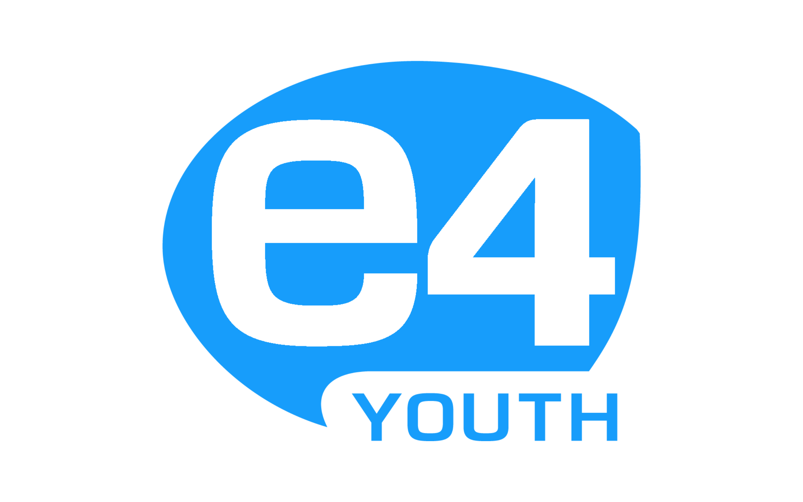

<!-- Copyright (c) 2022 8th Wall, Inc. -->
<!-- body.html is optional; elements will be added to your html body after app.js is loaded. -->

<div class="over">
  <span id="promptText">Tap to place Jacob Fontaine</span>
  <span id="captionText"></span>
  <div id="quickAnswers" class="quickAnswers">
    <button class="playBtn" type="button" data-seg="where_you_are">Where you are</button>
    <button class="playBtn" type="button" data-seg="why_it_matters">Why it matters</button>
    <button class="playBtn" type="button" data-seg="what_is_this_place">What is this place</button>
    <button class="playBtn" type="button" data-seg="key_fact">Key fact</button>
    <button class="playBtn" type="button" data-seg="deeper_history">Deeper history</button>
    <button class="playBtn" type="button" data-seg="wrap">Wrap</button>
  </div>
</div>

<!-- Add the tap-place component to the scene so it has an effect -->
<a-scene
  tap-place
  caption-comp
  landing-page="
  logoSrc: #efouryouth;
  logoAlt: e4Youth x Froliq;
  "
  xrextras-loading="
  loadBackgroundColor:#ffffff;
  cameraBackgroundColor: #000000;
  loadImage: #efouryouth;
  loadAnimation: pulse;"
  xrextras-runtime-error
  renderer="colorManagement:true; physicallyCorrectLights:true"
  renderer.useLegacyLights="false;"
  xrweb="
    allowedDevices: any;
    defaultEnvironmentFogIntensity: 0.5; 
    defaultEnvironmentFloorTexture: #groundTex; 
    defaultEnvironmentFloorColor: #FFF;
    defaultEnvironmentSkyBottomColor: #B4C4CC; 
    defaultEnvironmentSkyTopColor: #5ac8fa;
    defaultEnvironmentSkyGradientStrength: 0.5;">
  <!-- We can define assets here to be loaded when A-Frame initializes -->
  <a-assets>
    
    <!-- <a-asset-item id="birdModel" src="assets/bird_1.glb" animation-mixer="clip:*;"></a-asset-item> -->
    <!-- <audio id="DialogueSound" src="assets/segments/victory-grill__what_is_this_place_v1.mp3" preload="auto"></audio> -->
    <a-asset-item
      id="jacobModel"
      src="assets/Jacob_animations_blendshapes_addIdle_slowHold_VO4_grill.glb"></a-asset-item>
    <audio id="DialogueSound" src="assets/segments/victory-grill__what_is_this_place_v1.mp3" preload="auto"></audio>
    <a-entity
      id="captionController"
      captions="script: Select a quick answer to begin."
      info="duration: 14; chunkSize: 6; audioId: DialogueSound; textId: captionText"></a-entity>
    <a-entity
      gltf-model="#jacobModel"
      anim-controller="lipSyncClip: Jacob Fontaine-LipSyncAction; audioId: DialogueSound"></a-entity>
  </a-assets>

  <a-entity id="dialogueEntity" sound="src: #DialogueSound; autoplay: false; positional: false;">
  </a-entity>

  <!-- The raycaster will emit mouse events on scene objects specified with the cantap class -->
  <a-camera
    id="camera"
    position="0 8 8"
    raycaster="objects: .cantap"
    cursor="
      fuse: false;
      rayOrigin: mouse;">
  </a-camera>

  <a-entity
    light="
      type: directional;
      intensity: 3.9;
      castShadow: true;
      shadowMapHeight: 2048;
      shadowMapWidth: 2048;
      shadowCameraTop: 40;
      shadowCameraBottom: -40;
      shadowCameraRight: 40;
      shadowCameraLeft: -40;"
    position="0 10 0"
    rotation="-90 0 0"
    shadow>
  </a-entity>

  <a-light type="ambient" intensity=".7"></a-light>
  <!-- Adding the cantap class allows the ground to be clicked -->
  <a-box
    id="ground"
    class="cantap"
    scale="1000 2 1000"
    position="0 -0.99 0"
    material="shader: shadow; transparent: true; opacity: 0.4"
    shadow>
  </a-box>
</a-scene>
